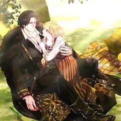
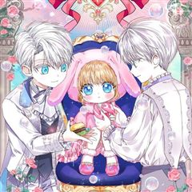
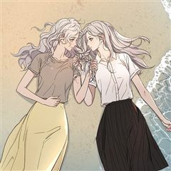
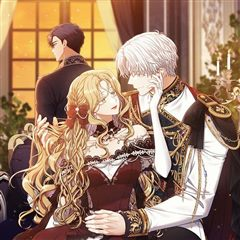
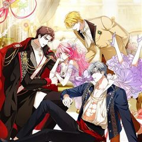
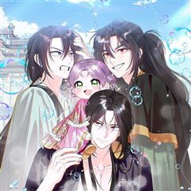
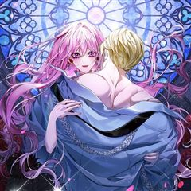

카카오웹툰 추천 인기 순위 TOP 30
카카오웹툰에서 지금 연재 중인 작품을 카카오웹툰 공식 인기 순위 순서로 모았어요. 네이버웹툰·카카오웹툰·레진코믹스에서 조건에 맞는 작품 944개 중 인기 순으로 30개를 골랐어요. 인기 TOP 3: 군림천하, 너에게 빼앗을 왕관, 황제와 비밀 연애 중인데 나는 그걸 몰라
2026-10-12 기준 · 성인 작품 제외
내 취향으로 더 좁혀서 추천받기 →-
1
 카카오웹툰
카카오웹툰군림천하
"너만은 꼭 군림천하 해야 한다!” 그 한마디로 진산월의 운명이 결정됐다. 스물세 살, 그는 종남파의 장문인이 되었다. 남은 이들은 단 8명의 제자뿐. 한때 천하제일을 꿈꿨지만, 지금은 명맥만을 잇는 문파. 사부의 유지를 위해, 살아남기 위해— 진산월은 비정한 강호로 나아간다.
자극적인성장물액션카카오웹툰에서 보기 → -
2
 카카오웹툰
카카오웹툰너에게 빼앗을 왕관
내 평생을 바쳐 사랑한 사람. 그러나 사랑이라 믿었던 것은 배신이었고, 왕이었던 오라비는 나의 무지로 인해 죽었으며, 조국은 소리 없이 처참히 무너졌다. “다시… 돌아왔어.” 하지만 이번 생은 다를 것이다. 숙부에게 주어졌던 영광은 전부 빛을 잃을 것이며, 남편이 바랐던 찬란한 왕관은…
로판복수극카카오웹툰에서 보기 → -
3
 카카오웹툰
카카오웹툰황제와 비밀 연애 중인데 나는 그걸 몰라
전쟁광 폭군이 햇살캐 성녀 여주와 사랑에 빠지는 로판 속, 원작 줄거리와 전-혀 상관없는 엑스트라로 환생한 '캐롤리나'. 세기의 로맨스보다 내일의 야근 여부가 더 중요한 소시민 리나의 평범한 일상에도, 어느 날 운명처럼 빛나는 외모의 남자친구가 찾아왔는데... ...그땐 몰랐다. ".…
설렘폭발로판로맨틱코미디카카오웹툰에서 보기 → -
4
 카카오웹툰
카카오웹툰결혼 장사2 ~잊히지 않을 노래~
고귀한 자리에 올랐으나 가족도 권력도 사랑도… 그 무엇도 가지지 못했던 왕, 시릴 드 세브랑. 유일한 구원이자 전부였던 알렉산드라를 지키지 못하고 죽임을 당했을 때, 그는 알 수 없는 힘에 의해 10년 전으로 되돌아가게 된다. 아직 알렉산드라가 아르노의 공녀로 기사의 꿈을 꾸며, 성자…
성장물로판타임슬립카카오웹툰에서 보기 → -
5
 카카오웹툰
카카오웹툰템빨
[신영우 (유저 네임: 그리드)] 세계 최고의 가상 현실 게임 <SATISFY>. 현실에서나, 게임 속에서나, 불운은 항상 그의 곁을 맴도는데.... 퀘스트 수행 중 우연히 발견한 게임 속 로또, '파그마의 기서'. 20억 명이 넘는 유저 중 유일한 최강의 레전드리 직업으로 전직. "…
사이다학원물게임판타지카카오웹툰에서 보기 → -
6
 카카오웹툰
카카오웹툰권왕전생
인간들이 이종족을 노예로 부리는 세상. 대마도사 '레펜하르트'는 이종족들을 돕는다는 이유로 인간들에게 마왕 취급을 받는다. 마왕을 토벌하기 위해 온 용사 일행! '레펜하르트'는 그에 맞서 용사 일행에게 큰 피해를 주는 것에 성공하지만, 결국 권왕 '테스론'에게 죽임당할 위기에 처하는데…
학원물성장물카카오웹툰에서 보기 → -
7

카카오웹툰왕자님은 양파 따위에 울지 않는다
염병할 전쟁이 끝났다. 그로부터 3년. 이 시골 마을도 제법 안정된 것 같…… 은데. 웬 곰 같은 부랑자가 우리 식당에 쳐들어와 헛소리를 한다. “전쟁 중, 귀하의 아버님에게 진 빚을 갚으러 왔습니다.” 그런데 이 자식은 자기가 뭘 빚졌는지도 모른댄다. 아버지는 전쟁 중 돌아가셔서 뭘…
힐링로판로맨틱코미디카카오웹툰에서 보기 → -
8
 카카오웹툰
카카오웹툰대사형 선유
삼류 낭인 곽노의 손에 거둬진 아이들. 사제관계를 맺고 아이들은 어설프게나마 무공과 보법 수련을 하며 각자의 꿈을 꾼다. 먹고살기 위해 곽노는 늘 자리를 비워야 했고, 아이들 중 맏이인 선유는 사제들을 돌봐야 한다. 그는 대사형大師兄이다.
눈물샘자극액션가족카카오웹툰에서 보기 → -
9
 카카오웹툰
카카오웹툰이번 생은 가주가 되겠습니다
“…한번 해 보자. 내가 가주가 되는 거야.” 제국에서 제일가는 가문, 롬바르디의 사생아로 환생한 피렌티아. 게다가 이 가문은 막대한 부는 물론 외교와 문화까지 통달한 말그대로 제국의 역사 자체! 금수저 오브 금수저 인생 당첨! 앞으로는 탄탄대로일 거라 생각했는데…. 아버지는 돌아가시…
사이다로판회귀카카오웹툰에서 보기 → -
10
 카카오웹툰
카카오웹툰천하제일인의 소꿉친구
정파를 배신하고 천마 휘하의 마인이 되어 버린 구양천. 마인으로서 살아가며 천마의 명으로 본인의 의지와는 상관없이 수많은 악행을 저지르고 후회로 점철된 인생을 살아가게 된다. 천마가 일으킨 정마대전. 정파의 삼존 존재마저 무릎을 꿇린 천마를 베어낸 위설아로 인해 길고 길었던 지옥 같은…
액션하렘카카오웹툰에서 보기 → -
11

카카오웹툰아기는 악당을 키운다
세 번의 회귀. 4회차 인생. 운명의 아이로 선택되어 자랐으나 진짜 운명의 아이가 차원이동하여 나타나 그 아이를 위해 희생되는 삶이 반복된다. ‘이 나라는 노답이야. 망명하자.’ 망명 자금을 벌기 위해 입양되기를 택한 르블레인. 거기까진 좋았는데 입양된 곳이 하필이면 악당 가문이었다.…
로판육아물카카오웹툰에서 보기 → -
12
 카카오웹툰
카카오웹툰가드패스
평소 먹는 것을 좋아해 뚱뚱하고 큰 체격을 가진 '임세준'. 그는 뚱보라는 놀림에도 신경 쓰지 않는 자존감이 높고 확고한 성격을 가졌다. 그에게 단 한 명의 친구 '서하진'. 그녀는 어릴 적부터 세준을 지켜주기 위해 늘 운동을 배워왔다. 어느 날 세준은 같은 반 일진과 트러블이 생기고…
사이다학원물배틀카카오웹툰에서 보기 → -
13

카카오웹툰너의 뜻대로
“네가 사라졌으면 좋겠다고 생각했어. 하지만 정말 그렇게 되리라고는 생각하지 못했어.” 우수한 성적과 뚜렷한 목표로 빛나는 삶을 살고 싶은 윤정. 욕심 없이 평범하고 소박한 삶을 바라던 언니 은아. 그리고 두 자매의 인생에 깊숙이 들어온 남자, 철윤. 오랜 기간 한마음으로 윤정의 곁을…
자극적인카카오웹툰에서 보기 → -
14
 카카오웹툰
카카오웹툰SSS급 죽어야 사는 헌터
F급 말단 헌터 ‘김공자‘. 랭킹 1위 ‘염제‘를 부러워하던 어느 날, 무려 S+급 스킬을 얻는다. 하지만 기쁨도 잠시, 어째 스킬 내용이 이상하다?! 상대의 스킬 중 1개를 복사한다,까지는 좋은데… "뭐? 내가 죽어야만 발동된다고?!" 죽어야 사는 헌터의 인간찬가 <SSS급 죽어야…
눈물샘자극학원물회귀카카오웹툰에서 보기 → -
15
 카카오웹툰
카카오웹툰픽 미 업!
그 누구도 던전의 끝까지 오르지 못한 극악의 난이도를 자랑하는 모바일 가챠 게임 <픽 미 업!(Pick me up!)> 마스터 오브 마스터라 불리는 세계 랭킹 5위의 마스터 '로키'는 던전을 깨던 중 정신을 잃게 된다. 깨어나 보니 레벨도 1, 등급도 1성인 <픽 미 업!> 속 영웅…
사이다액션게임판타지카카오웹툰에서 보기 → -
16
 카카오웹툰
카카오웹툰소설 속 엑스트라
"나는 누구지?" 이 세상은 내가 쓴 소설. 그러나 나는 단 한 번도 쓴 적 없는 인물이 되었다. 얼굴은 물음표에다, 소설 속 그 누구와도 접점이 없는, 아무도 기억 못할 그런 인물. 영웅 아카데미에 입학한 엑스트라, 아니 소설 속 먼지가 살아남는 법. 남은 소설 분량까지 버텨야 한다!
사이다학원물성장물카카오웹툰에서 보기 → -
17
 카카오웹툰
카카오웹툰비에 젖은 흔적들이다
그날 내가 잃어버린 것은 너일까, 나일까. 그리고 내가 다시 찾은 것은 나일까, 너일까. 아니면 우리일까. 14년 전 그날 홀로 남겨진 동경은 갈 길을 잃은 채 그 자리에 멈춰버렸다. 차가운 세상에 대한 믿음도 유대도 기대도 없다. 절망도 없다. 나조차도 없다. 껍데기만 어른이 되어버…
설렘폭발시대물카카오웹툰에서 보기 → -
18
 카카오웹툰
카카오웹툰레드스톰 - 왕의 귀환
피에 젖은 사막. 붉은 사막을 용납할 수 없던 한 소년. 소년은 사막의 무신이 되어 사막을 구하지만 이제는 세계가 피에 젖으려 한다. 무신은 이제 사막을 넘어 세계를 구하려 한다. “4년 만에 돌아온 그로우, 왕의 귀환. 이제는 사막에서 전쟁을 보여줘야 할 때다.”
액션성장물카카오웹툰에서 보기 → -
19

카카오웹툰나는 한 편의 극을 보았다
'심장은 여전히 그를 사랑한다고 말했지만, 머리는 그 사랑을 거부했다. 그것은 꽤나 묘한 기분이었다. 나지만 내가 아닌 느낌이었다.' 햇빛을 받아 금발처럼 보이는 금갈색 머리카락이 허리까지 내려와 굽실거렸다. 거울 안에는 반짝이는 짙은 녹색 눈동자를 가진 아이가 눈을 깜빡이고 있었다.…
로판시대물카카오웹툰에서 보기 → -
20
 카카오웹툰
카카오웹툰철혈검가 사냥개의 회귀
바스커빌 가문의 사냥개 '비키르'. 사냥개로서 가문에 충성한 보답은 모함과 누명으로 얼룩진 단두대의 칼날이었다. "다시는 토끼를 잡고 나면 삶아지는 사냥개처럼 살지 않겠노라." 그런 그에게 죽음 대신 찾아온 뜻밖의 기회. 어둠 속에서 송곳니를 갈고닦는 비키르의 눈이 붉게 빛났다. "기…
학원물복수극카카오웹툰에서 보기 → -
21

카카오웹툰그 쓰레기가 나였어요
역하렘 연애 육성 게임에 빙의했다. 온갖 악행을 저지르다 처단당하는 악녀, F-등급의 튤리아 프레지어로. “이렇게 끔찍한 스탯으로 살아남는 게 가능해?” “이 건방진 말투는 뭐야?!” 돈도 없고 운도 없고 모두에게 미움받으며, 아무도 날 사랑하지 않는다지만… 목숨을 부지하기 위해서 모…
사이다설렘폭발로판빙의카카오웹툰에서 보기 → -
22
 카카오웹툰
카카오웹툰연하지옥
사랑도, 결혼도 '계산'이 되는 손해 보기 싫은 시대. 현대사회 매연 속을 살아가는 두 남녀에게 신선한 사랑이 찾아온다. 엘리트 코스를 밟아왔지만 결혼만큼은 계획대로 되지 않아 초조한 35세 커리어우먼 현다영. 누나 부부의 실패한 결혼생활이 나이 차이라고 생각하는, 의욕 없는 독신남…
설렘폭발로맨틱코미디카카오웹툰에서 보기 → -
23카카오웹툰
데뷔 못 하면 죽는 병 걸림
4년 차 공시생, 낯선 몸에 빙의해 3년 전으로 돌아왔다. 그리고 그의 눈앞에 나타난 갑작스러운 상태창의 압박! [돌발!] [상태이상: '데뷔가 아니면 죽음을!' 발생!] 돌연사 위협 때문에 팔자에도 없던 아이돌에 도전하게 된 주인공의 대환장 일지. ※특이사항: 빙의 전 아이돌 데이터…
설렘폭발빙의카카오웹툰에서 보기 → -
24
 카카오웹툰
카카오웹툰푸른 눈의 책사
적법한 왕의 핏줄을 타고난 두 형제는 가짜 왕을 몰아내고 군위에 오를 것을 결심한다. 갈대밭에 숨어 옆 나라로 건너가 조력자들을 만나려는 그들에게 장사치는 푸른 눈의 책사에 대한 경고를 한다.
시대물카카오웹툰에서 보기 → -
25카카오웹툰
겨울성의 아기 죄수님
나라는 패망하고, 왕족들이 모두 처형되던 날 밤. 당연히 자신도 죽을 것이라 생각했던 클라리스는 뜻밖의 말을 듣게 된다. "열여덟이 되지 않은 자를 사형에 처할 수는 없다. 대신 네가 열여덟이 되는 날, 나는 너를 죽일 것이다." 그렇게 클라리스에게 주어진 십 년이라는 시간. 클라리스…
힐링로판성장물카카오웹툰에서 보기 → -
26

카카오웹툰시한부 아기 의원이 천재인 걸 안 숨김
인생 3회차, 제국 최고 의원이 되어 원래 세계로 돌아가기 직전… 황제에게 속아 목숨을 잃고 또 세 살로 리셋됐다. 더 이상의 회귀는 싫어! 지난 생에서 능력은 꽃피웠지만, 나를 지켜줄 사람이 없었다는 게 문제였다. 내 승부수는 최고의 무사였으나 불치병에 걸려 동편에 유폐된 숙부, 백…
힐링로판가족카카오웹툰에서 보기 → -
27
 카카오웹툰
카카오웹툰저승식당
“8, 8, 8, 82억이요?!” 흙수저 인생에 갑자기 찾아온 82억의 건물!! 그리고… 식당? 식당에 찾아오는 손님들의 행색은 수상하기 짝이 없고 알 수 없는 말만 하는데……. 서울 한복판에서 벌어지는 등골 서늘한 감동 스토리. 매일 밤 열한 시부터 한 시까지. 저승식당, 지금 영업…
힐링음식&요리옴니버스카카오웹툰에서 보기 → -
28
 카카오웹툰
카카오웹툰야구의 정치
구단에서 쫓겨난 야구 코치 맹정진. 선배의 도움으로 겨우 입단한 선데빌스 팀은 파벌 싸움으로 나락에 떨어진 상황. 이곳에서 버틸 방법은 정치밖에 없다. 실력만으론 부족한 야구판에서 살아남기 위해, 맹정진의 ‘정치’가 시작된다.
성장물액션카카오웹툰에서 보기 → -
29

-
30

카카오웹툰약탈혼으로 남편부터 바꾸겠습니다
“잘 가. 원작의 여주인공 씨.” 세 번의 절망과 죽음. 그 끝에서 매번 내 남편과 모든 걸 빼앗은 여자가 사실 빙의자라는 것을 깨달았다. 네 번째 회귀, 이제는 빼앗긴 모든 걸 되찾을 때다. 그러기 위해서는 강력한 조력자가 필요했다. 미친년에게는 미친놈으로. “나를 약탈하세요.” 황…
설렘폭발로판회귀카카오웹툰에서 보기 →